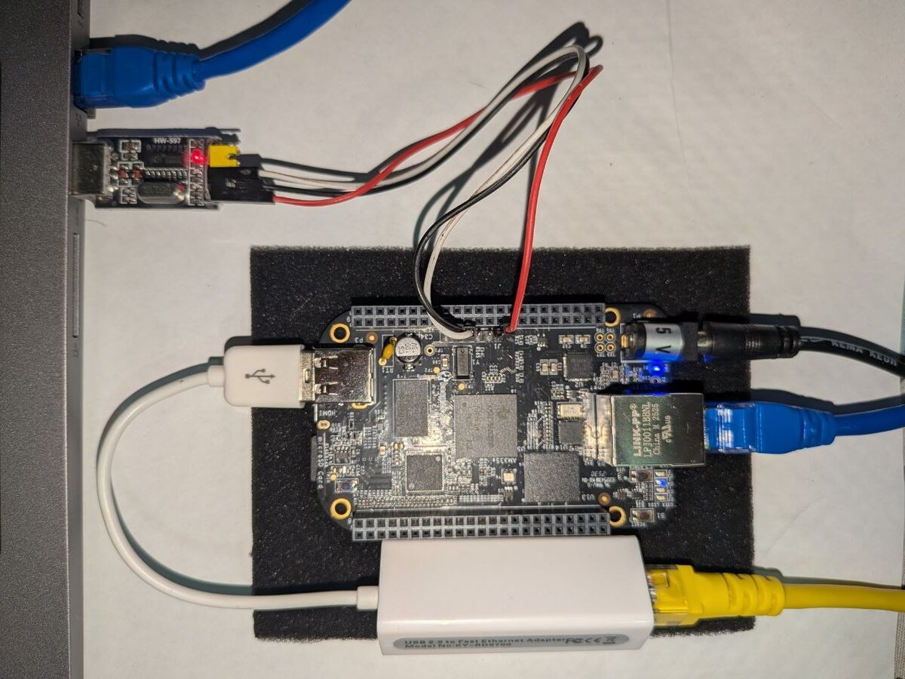

BeagleBone Black edge router
Embedded Linux and networking project, 2026
A BeagleBone Black turned into a working edge router, built from the bootloader up. It boots my own U-Boot and Linux 6.18 kernel over TFTP, routes and NATs between LAN and WAN behind an nftables firewall with separate office and guest VLANs, and runs OSPF and BGP with FRR. I added a netfilter kernel module, eBPF/XDP packet filters, a C tool that talks rtnetlink and a Rust tool cross-compiled for ARM.
I profiled the single 1 GHz core with perf: dropping a packet flood in XDP cost about 10 µs per packet against 22 µs in nftables, and one nftables set replaced 500 linear rules at almost no cost. The firewall is tested in Linux network namespaces and on the real board, with CI on every push, a lintian-checked Debian package and DKMS for the kernel module.
Built with U-Boot, Linux kernel, C, Rust, Python and pytest, eBPF/XDP, nftables, FRR, perf, GitHub Actions, Debian packaging